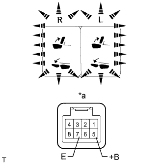

POWER SEAT SWITCH (for Rear No. 2 Seat) > INSPECTION |
| 1. INSPECT REAR POWER SEAT SWITCH (for LH Side) |
Measure the resistance according to the value(s) in the table below.
| Tester Connection | Switch Condition | Specified Condition |
| 4 (FWD) - 6 (E) | UP switch pressed | Below 1 Ω |
| 5 (BACK) - 6 (E) | DOWN switch pressed |
| *1 | UP Switch |
| *2 | DOWN Switch |
| *a | Component without harness connected (Rear Power Seat Switch Assembly) |
Apply battery voltage to the switch connector and check that the power seat switch illuminates.
| Measurement Condition | Specified Condition |
| Battery positive (+) → 7 (ILL+) Battery negative (-) → 2 (ILL-) | Illumination illuminates |
| *a | Component without harness connected (Rear Power Seat Switch Assembly) |
| 2. INSPECT REAR POWER SEAT SWITCH (for RH Side) |
Measure the resistance according to the value(s) in the table below.
| Tester Connection | Switch Condition | Specified Condition |
| 4 (FWD) - 6 (E) | UP switch pressed | Below 1 Ω |
| 5 (BACK) - 6 (E) | DOWN switch pressed |
| *1 | UP Switch |
| *2 | DOWN Switch |
| *a | Component without harness connected (Rear Power Seat Switch Assembly) |
Apply battery voltage to the switch connector and check that the power seat switch illuminates.
| Measurement Condition | Specified Condition |
| Battery positive (+) → 7 (ILL+) Battery negative (-) → 2 (ILL-) | Illumination illuminates |
| *a | Component without harness connected (Rear Power Seat Switch Assembly) |
| 3. INSPECT NO. 1 FOLD SEAT SWITCH ASSEMBLY |
Measure the resistance according to the value(s) in the table below.
| Tester Connection | Switch Condition | Specified Condition |
| 1 (RTNL) - 7 (E) | RETURN LH switch pressed | Below 1 Ω |
| 6 (FLDL) - 7 (E) | FOLD LH switch pressed | |
| 3 (RTNR) - 7 (E) | RETURN RH switch pressed | |
| 8 (FLDR) - 7 (E) | FOLD RH switch pressed |
| *1 | RETURN RH Switch |
| *2 | FOLD RH Switch |
| *3 | RETURN LH Switch |
| *4 | FOLD LH Switch |
| *a | Component without harness connected (No. 1 Fold Seat Switch Assembly) |
|  |
Apply battery voltage to the switch connector and check that the fold seat switch illuminates.
| Measurement Condition | Specified Condition |
| Battery positive (+) → 5 (+B) Battery negative (-) → 7 (E) | Illumination illuminates |
| *a | Component without harness connected (No. 1 Fold Seat Switch Assembly) |